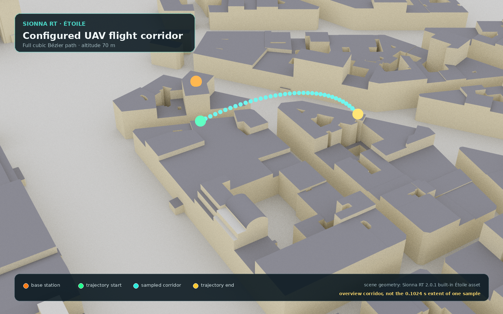
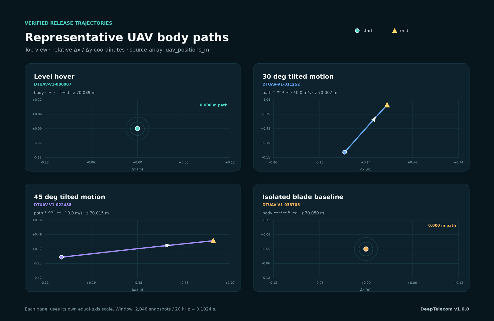

水平悬停 Level hover · level_v0
DTUAV-V1-000007{kind=link}
0 ms约 102.4 ms
机体不平移，但四个旋翼持续转动。25 个散射点共同形成围绕机体多普勒基线的周期性谱结构。
- 倾斜角
- 0°
- 机体速度
- 0 m/s
- 散射点
- 25
- 旋翼频率
- 26.69335 Hz
- 叶片半径
- 19.314 mm
- 场景
- Étoile
shard-00000.tarPNG SHA-256 · 75dd8fce…108fdv1.0.0 正式发布样本
下面四张图不是概念插画，而是从最终 WebDataset TAR 中取出的真实 PNG。我们已经对原始源文件、TAR 成员和公开 manifest 做了三方 SHA-256 核验。
频谱图横向表示时间，纵向表示多普勒频移，颜色表示相对谱强度（turbo 色图）。PNG 是为快速浏览生成的无坐标轴预览；精确的 t_axis、f_axis 和 S_dB 数组保存在同名 NPZ 中，定量分析应读取 NPZ。
level_v0DTUAV-V1-000007机体不平移，但四个旋翼持续转动。25 个散射点共同形成围绕机体多普勒基线的周期性谱结构。
shard-00000.tarPNG SHA-256 · 75dd8fce…108fdpitch30_v10DTUAV-V1-011252四旋翼模型绕仿真 y 轴倾斜 30°，并沿 Bézier 轨迹以 10 m/s 平移；机体多普勒与旋翼微多普勒共同进入频谱。
shard-00008.tarPNG SHA-256 · 40e782a8…7c8fepitch45_v10DTUAV-V1-022488在相同 10 m/s 平移速度下，模型倾斜角增至 45°。该样本可用于对比更大姿态变化带来的传播与谱形差异。
shard-00017.tarPNG SHA-256 · 5be2ae74…087b1single_blade_v0DTUAV-V1-033705只保留一个旋转叶尖散射点，中心不平移，因此呈现清晰的周期性微多普勒轨迹。它是控制样本，不代表单桨无人机。
shard-00026.tarPNG SHA-256 · c9de3575…16937场景与飞行路径
第一张图由正式生成器直接渲染 Sionna RT 内置 Étoile 场景，展示基站与完整的配置轨迹走廊；第二张图只读取四个样本 NPZ 的 uav_positions_m，展示各自 0.1024 s 观测窗口内的真实机体轨迹。


DTUAV-V1-000007水平悬停 · 0.0000 m定点 (147.0149, −47.9795, 70.0388) mDTUAV-V1-01125230° 倾斜 · 1.0236 m(147.0302, −47.9545, 70.0068) → (147.3050, −46.9686, 70.0068) mDTUAV-V1-02248845° 倾斜 · 1.0235 m(178.8773, −2.1977, 70.0154) → (179.8439, −1.8614, 70.0154) mDTUAV-V1-033705单叶片基准 · 0.0000 m机体中心定点 (170.6565, −6.8912, 70.0499) msionna.rt.scene.etoile基站坐标(78.9293, 32.0468, 28.9687) m控制点P0–P3 共 4 个轨迹高度70 m普通三类的 25 个散射点由“1 个机体点 + 4 旋翼 × 2 叶片 × 每叶片 3 个径向点”构成。生成时，旋翼频率、叶片半径、噪声和初始位置在配置范围内随机扰动，因此每个样本都有自己的确切参数。
了解生成方法{kind=link}
{kind=link}
{kind=link}
{kind=link}
{kind=link}